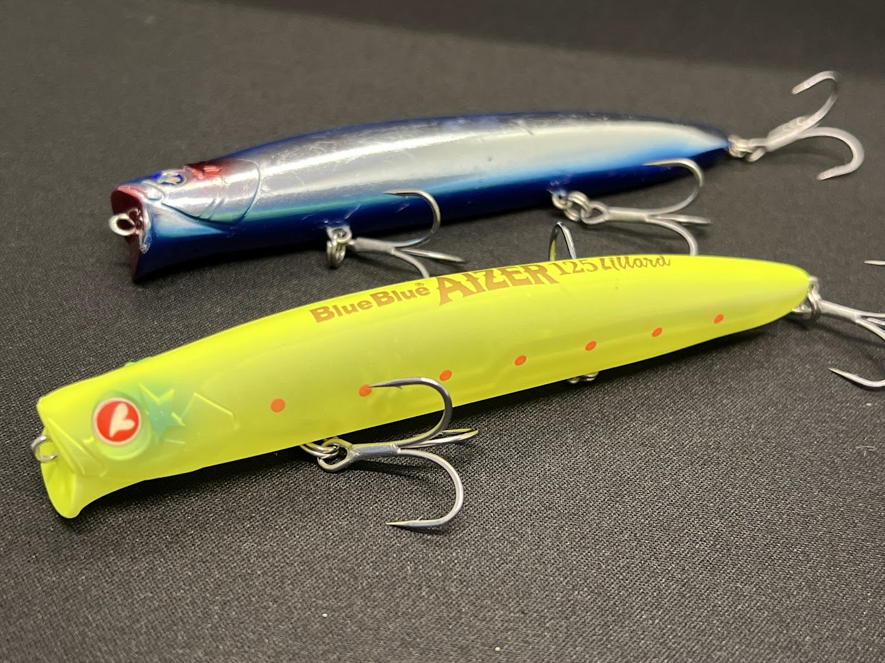
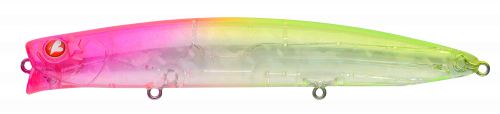
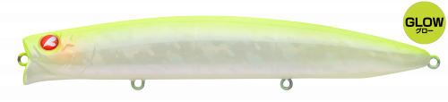
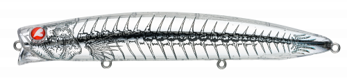
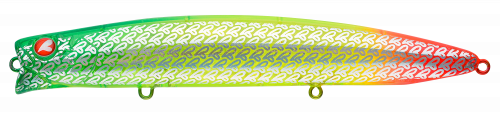

AIZER125LILLAD(アイザー125リラード)
AIZER125LILLAD(アイザー125リラード)はBlueBlueのスローシンキングです。
アイザーの一層下を狙えるシャローランナーが登場。飛距離の向上とアクションの破綻が少なくなった！釣れる秘訣を徹底解説。

スペック
- メーカー
- BlueBlue
- 長さ
- 125mm
- 重さ
- 24.8 g
- フック
- #4×3
- レンジ
- 20〜50cm
- タイプ
- スローシンキング
- アクション
- シャローランナー
- ターゲット魚種
- シーバス
- 価格
- 2500円(税抜)
- 発売日
- 2026年3月6日
アイザー125リラードの特徴
アイザー125リラードの使い方・得意な状況
ここから下は手動で追記してください。
ワンポイント
人気カラー

ピンクチャートクリア人気No.1。テスター愛用カラーでテスター気分になれる色。

チャートバックグロー視認性抜群で、ナイトゲームに最適。グローも効いてます。

エンシェントまるで古代魚。釣れたらそこには古代のベイトがいるかも、、、？

シグナルハートWEBショップ限定カラー。無数のハートがとてもかわいい。
画像出典:BlueBlue公式HP
ここから下は手動で追記してください。
アイザー125リラードに似ているルアー
- ここに手動で追記してください。